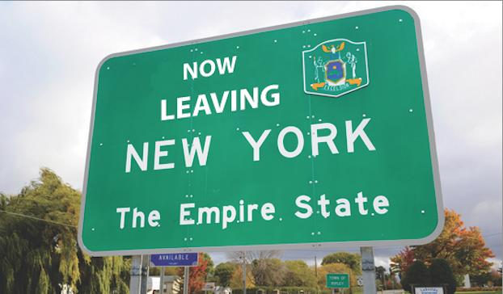
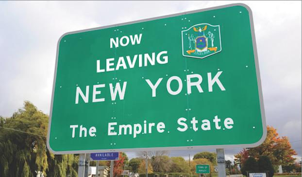

Here is an unordered list:
The leaving New York sign
Seagate Beach also has a nice view
Coneys cones is expensive and the ice cream isnt even that good but i like the name so

This is my favorites page : My favorites page If the first doesnt work
This is my skills page : My skills page If the first doesnt work
This is my home page : My favorite home page If the first doesnt work
The leaving New York sign
Seagate Beach also has a nice view
Coneys cones is expensive and the ice cream isnt even that good but i like the name so
The MTA
It sucks, it never is on time, the mta cards dont work most of the time, and there is police but they dont do anything to stop crime from happenign unless you count just artist or a person selling stuff as crime, then they definetly do quite a lot